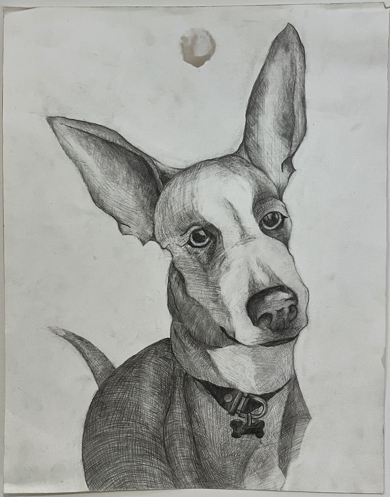
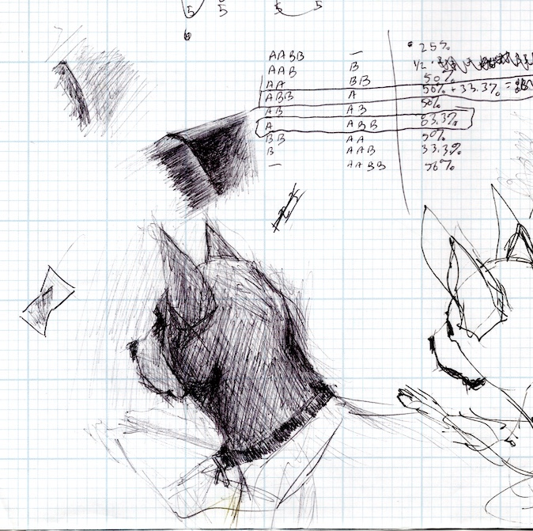
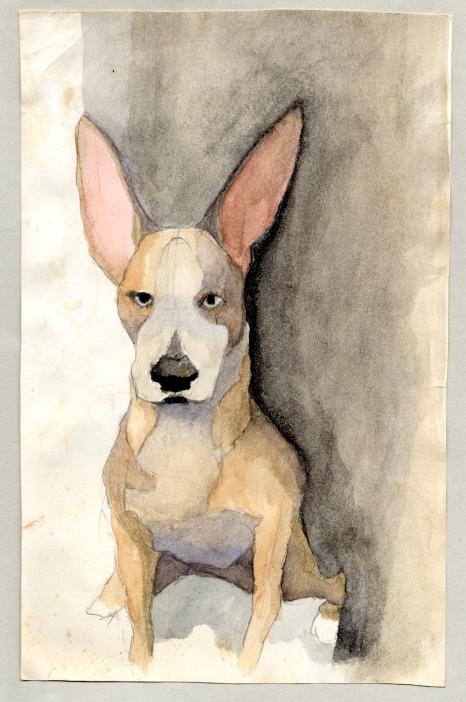
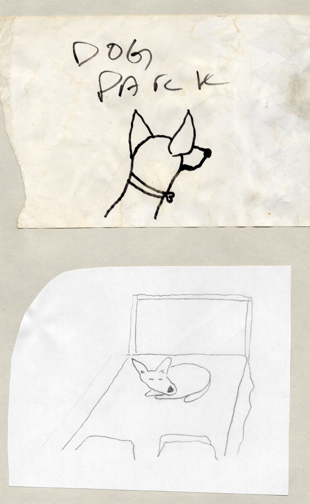
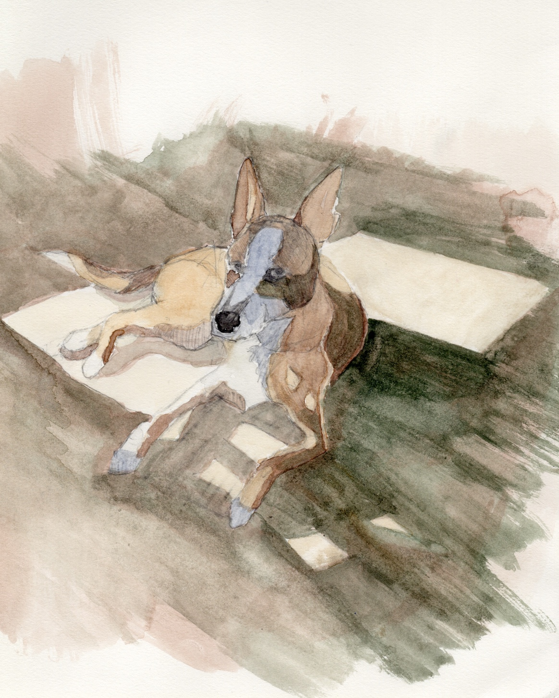
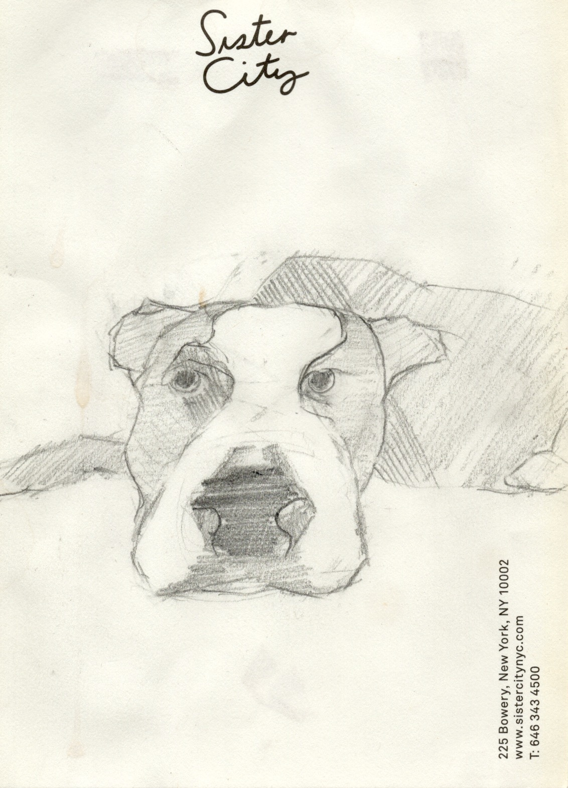
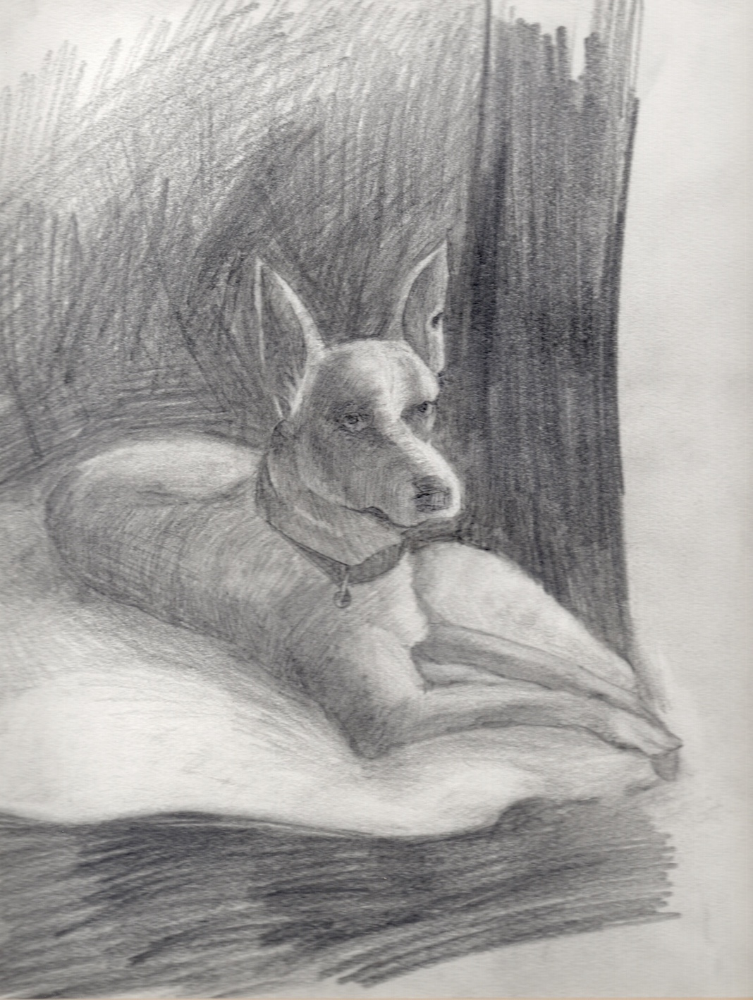
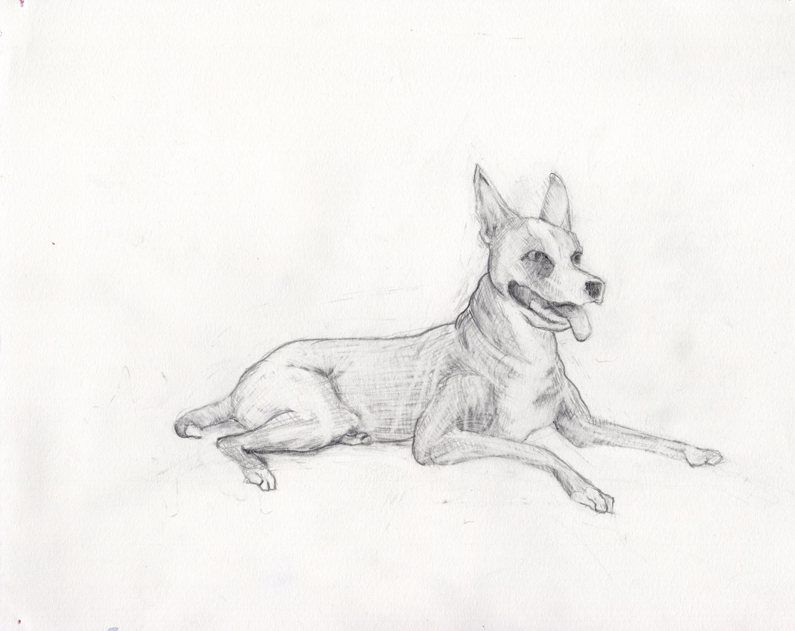
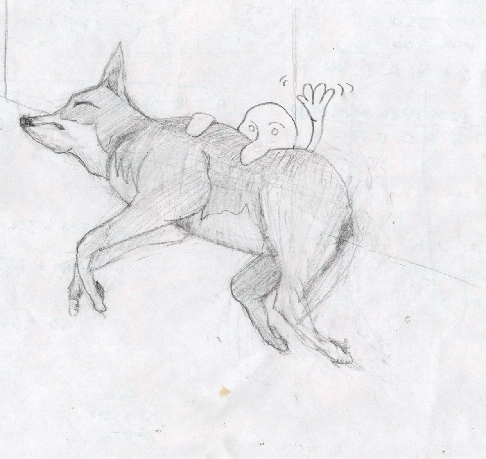
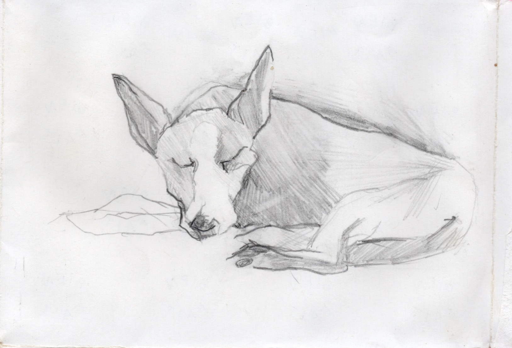

Dexter
Drawings, 2015-ongoing
Dexter is the documentation of a collaboration between me and my dog, Dexter. My walks with Dexter take on a labyrinthian quality. We lead one another around the sidewalks of Brooklyn, meandering but always leading back home.
My observations on our walks take on the subject matter for my other art projects. Therefore, Dexter's role in my artmaking practice more than inspiration - he is a collaborator.
These drawings are documents of our collaboration. They are also the residual output of meditation practices. Dexter is a readily available subject for my drawing practice, which I primarily use to improve my mental health.









